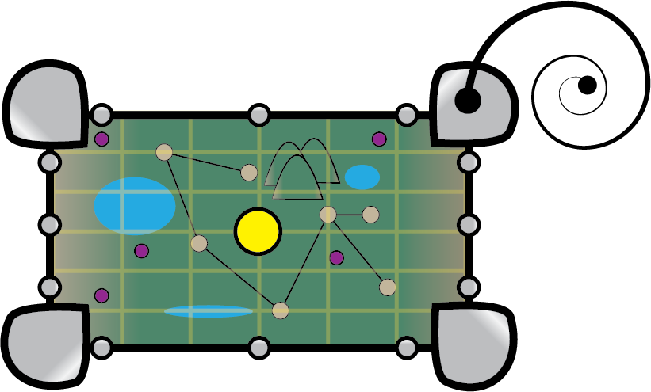
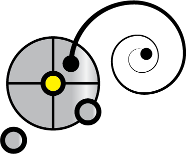
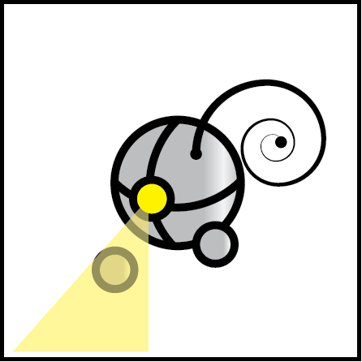
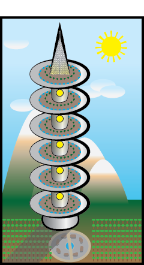

 Imps can buy orbs that can expand into maps, showing their location. Orbs can also show health, stats, other imps. The food towers also double as a signal for the orbs to opperate, making them hover at a steady distance above the ground.
 The orbs were the first invention reated by the imps that required every imp's powers. It is a sign of peace between the imps and hope for future cooperation. It has the expansive memory of the gluttons, rare metal from the greed imps, it's durability from the Wrath imps. It's levitation abilities come from research from the Sloth imps and its adaptability from the weather are from the Envy's adaptability powers. The lust imps created its smooth design and organic antenna.
 The orb is a friend to all players... unless you attack its imp. The orbs are also protectors, defending their imp from danger.
These rings are linked to the wearer's body and transmit information to the orb and food tower's information database.
 Through information gathered by the Gluttony imps, they discovered the human ways of farming and altered it. Instead of growing crops on the ground horizontally, they built towers that are exposed to the sun and grow their food in them vertically, taking up less space and saving their native plants for future generations. The towers collect water through the warm misty air touching their cold pipes, collecting the condensation for the plants and imps to partake in while the crystal and plant infused panels on top collect solar energy. The towers were created by all of the imp's efforts and are a product of peace between the races, therefore, all races are allowed to have these tower's built in their territory.